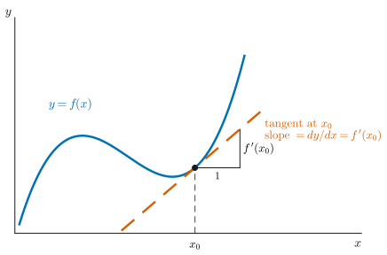
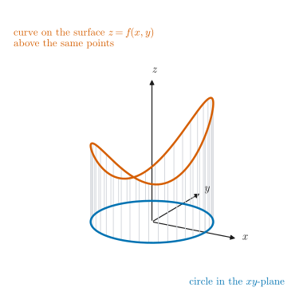
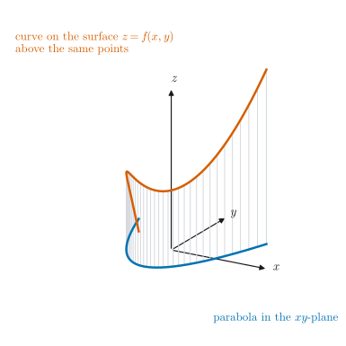
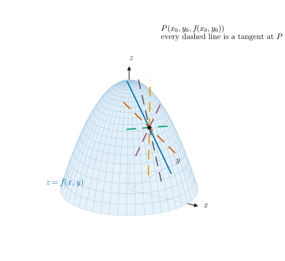
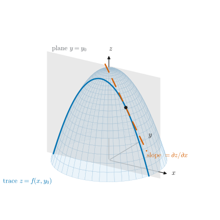
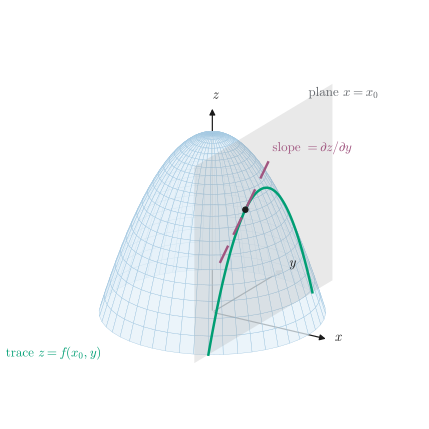
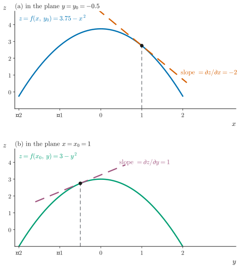
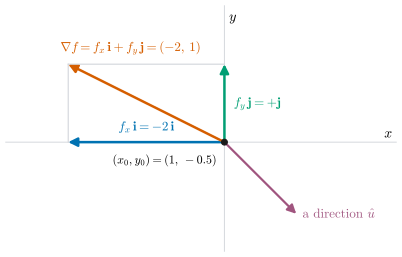
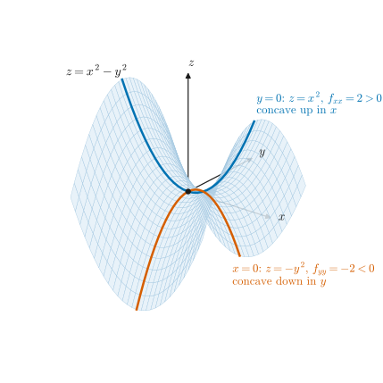
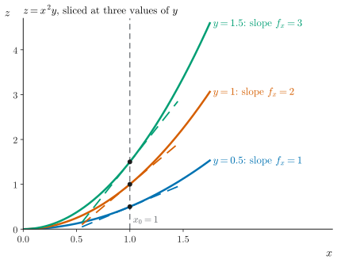

UE26MA141A Engineering Mathematics – I · Unit 1 · Partial Differentiation
Geometrical Interpretation of Partial Derivatives
Complete study pack: higher-order partials, partial derivatives as slopes, gradient, concavity and mixed partials, and problems
Compiled from the PESU class 002 slide deck, the class 002 AV-summary transcript (with three targeted video frames), the Unit 1 class-work sheet and past ESA papers. Generated 14 October 2026.
·How to use this pack
Topics 1–7 follow the order of the lecture. Every topic has the same parts: overview, key terms, formulas, figures, flowcharts, important points, worked examples, past-paper questions and a recap. IDs are shared with the separate documents: E = formula, G = graph, F = flowchart, W = worked example. Each ID is numbered by topic, so E4.2 is the second formula of topic 4.
ESA ★★★Asked repeatedly in past ESA papersESA ★★Asked in past ESA papers or computed in class-work problemsESA ★Conceptual: taught in class, not examined so faradded for clarityStandard context that is not in the class materialtranscript onlySaid in the lecture but not on any slidevideo onlySeen only in a frame of the class videonot on current slidesFrom older material or past papers, not this year's slidesS002·7Deck 002, slide 7 (rendered .pptx)T002 00:06:10AV-summary transcript 002, segment start timeV002 00:07:45Frame grabbed from the class 002 videoCW U1 P2 · ESA Dec-23 1aUnit 1 class-work problem 2 · past-paper question
1Higher-order partial derivatives
Differentiating a partial derivative again gives higher-order partial derivatives. A function of two variables has 2 first-order, 4 second-order and 2n nth-order partial derivatives; with m variables there are mn of order n. The two mixed second-order partials are usually equal.
Key terms and definitions
First-order partial derivative. The partial derivative ∂f/∂x obtained by differentiating once (here, with respect to x while y is held constant). S002·3
Second-order partial derivatives.∂x2∂2f,∂y2∂2f,∂x∂y∂2f,∂y∂x∂2f, which are obtained by differentiating twice. S002·3
Higher-order partial derivatives. Third, fourth and nth order derivatives involve 3, 4 or n times differentiation respectively. S002·3
Mixed partial derivative. A higher-order partial in which you differentiate with respect to more than one variable, e.g. fxy and fyx. S002·9 · T002 00:00:06
“A function of 2 variables has two first order derivatives, four second order derivatives and 2n of nth order derivatives. A function of m independent variables will have mn derivatives of order n.” S002·3
Formulas
E1.1 · First-order partial derivativesESA ★★
fx=∂x∂f,fy=∂y∂f
givesRate of change of f in the x (or y) direction.appliesDifferentiate once; hold the other variable constant.noteTwo of them for a function of two variables.
givesThe four second-order partials of f(x,y).appliesDifferentiate twice. In fxy, the subscripts are read left to right: first x, then y.noteNotation order varies between books. The two mixed partials are equal when continuous (E1.4).
added for clarityS002·3 · T002 00:00:58
E1.3 · How many partial derivatives of order n?ESA ★
2 variables: 2nm variables: mn
givesThe number of nth-order partial derivatives, counting each order of differentiation separately.appliesTwo variables: 2 first-order, 4 second-order, 8 third-order.noteWith equal mixed partials, two variables give only n+1 distinct ones.
S002·3 · T002 00:01:37 · T002 00:02:13
E1.4 · Equality of mixed partials (Clairaut)ESA ★★
fxy=fyx⟺∂y∂x∂2f=∂x∂y∂2f
givesOrder of differentiation does not matter.appliesWhen fxy and fyx are continuous (true for every function in this unit's problems).noteVerified in CW U1 P2 and P8.
Remark. Totals: 2, 4, 8, …, 2n. With m variables there are mn. When mixed partials are equal, only n+1 of the 2n are different.
Figure F1.1. Counting partial derivatives of each order. ESA ★
S002·3 · T002 00:01:37 · T002 00:02:13
Important points and why
A partial derivative is taken with respect to one variable while every other variable is held constant. ESA ★★T002 00:00:06
Differentiating a first-order partial again gives a second-order partial; n differentiations give an nth-order partial. ESA ★★S002·3
For f(x,y): 2 first-order (fx,fy), 4 second-order (fxx,fyy,fxy,fyx), 2n of order n. ESA ★★S002·3 · T002 00:00:44
For f(x1,…,xm): mn derivatives of order n; e.g. m2 second-order partials. ESA ★S002·3 · T002 00:02:13
The two mixed partials “were equal” in the class examples: fxy=fyx for the smooth functions of this unit. ESA ★★transcript onlyT002 00:00:24
Exam trap. In fxy the order is x first, then y. Some books write the same derivative as ∂2f/∂y∂x. Both mean the same, and for this unit's functions the order does not change the answer. added for clarity
short-note recap
Differentiating f(x,y) once gives the first-order partials fx, fy; differentiating again gives four second-order partials fxx, fyy, fxy, fyx. In general n differentiations give 2n partials of order n for two variables and mn for m variables. In fxy, differentiate first in x, then in y. When the mixed partials are continuous, fxy=fyx (Clairaut).
2The one-variable picture: derivative as slope
For y=f(x) the derivative measures change: how fast y changes as you move along the x-axis. Geometrically, f′(x0) is the slope of the tangent line to the curve at x0. Partial derivatives extend exactly this idea to surfaces.
Key terms and definitions
Derivative (one variable). For y=f(x), dy/dx is the change in y produced by a change in position along the x-axis; at a point it equals the slope of the tangent to the curve. S002·4 · T002 00:02:50
“We know that the derivative of a single valued function gives the slope of the tangent line to the curve at the given point.” S002·4
Formulas
E2.1 · Derivative as slope (one variable)ESA ★
dxdyx0=f′(x0)=slope of the tangent to y=f(x) at (x0,f(x0))
givesSlope of the tangent line.appliesf differentiable at x0.
S002·4 · T002 00:03:13
E2.2 · Tangent line to y = f(x)ESA ★
y−f(x0)=f′(x0)(x−x0)
givesEquation of the tangent at x0.appliesf differentiable at x0.notePoint-slope form.
added for clarityS002·4
Graphs and diagrams

Figure G2.1. Derivative of y = f(x) as the slope of the tangent. ESA ★
S002·4 · T002 00:03:13
How to read it. The blue curve is y=f(x), and the dashed vermilion line is its tangent at x0. The small triangle shows the slope: a run of 1 gives a rise of f′(x0). In an exam, label the point, the tangent and the slope dy/dx at x0.
Important points and why
A derivative always represents change: dy/dx is the change on the curve as you change your position on the x-axis. ESA ★T002 00:02:50 · T002 00:02:59
At a particular point, the derivative is the slope of the tangent at that point. ESA ★S002·4 · T002 00:03:13
short-note recap
For y=f(x), dy/dx measures how y changes as x changes. At x0 it equals the slope of the tangent line to the curve at (x0,f(x0)), and the tangent is y−f(x0)=f′(x0)(x−x0).
3A function of two variables is a surface
z=f(x,y) gives one height z for every point (x,y), so its graph is a surface in three dimensions. If (x,y) is restricted to a curve in the xy-plane, such as a circle or a parabola, the matching points of the surface form a curve lying on the surface.
Key terms and definitions
Bivariate function. A function z=f(x,y) of two independent variables. Its graph is a surface in three dimensions. T002 00:04:16
Curve on a surface. If the points (x,y) are restricted to a curve in the xy-plane (circle, parabola, …), the points (x,y,f(x,y)) form a curve that lies on the surface. S002·5
“If the points (x,y) lie on a circle in the xy plane, then z = f(x,y) is a curve which looks like the graph shown. If the points (x,y) lie on a parabola in the xy plane, then z = f(x,y) is a curve which looks like the graph shown.” S002·5
Graphs and diagrams

Figure G3.1. Points on a circle in the xy-plane give a curve on the surface. ESA ★
S002·5 · T002 00:03:32
How to read it. The blue circle lies in the xy-plane. Each grey line rises to z=f(x,y), and the vermilion curve joins the tops: a closed curve lying on the surface z=f(x,y)=2.2+0.8xy+0.5x (an illustrative choice).

Figure G3.2. Points on a parabola in the xy-plane give a curve on the surface. ESA ★
S002·5 · T002 00:03:47
How to read it. Same idea with a parabola y=x2−1.2 in the xy-plane. Every point of the parabola has one height on the surface, so the vermilion curve lies on the surface above it.
Important points and why
A function of two independent variables always gives a surface in three dimensions: each (x,y) has one z. ESA ★T002 00:04:16
Restricting (x,y) to a curve in the xy-plane (circle, parabola) picks out a curve on the surface. ESA ★S002·5 · T002 00:03:32
short-note recap
A bivariate function z=f(x,y) assigns one height to each point of the xy-plane, so its graph is a surface in 3-D. Points (x,y) on a circle or parabola in the xy-plane give a curve lying on that surface.
4First-order partials as slopes of tangents
At a point P on a surface there are infinitely many tangent lines, one for each direction. ∂f/∂x at (x0,y0) is the slope of the one parallel to the x-axis, found by fixing y=y0; ∂f/∂y is the slope of the one parallel to the y-axis, found by fixing x=x0.
Key terms and definitions
Partial derivative, geometrically. The slope of the tangent line to the surface z=f(x,y) at (x0,y0), along the direction of the variable you differentiate with respect to. S002·6
Trace (plane section). The curve cut from the surface by a vertical plane such as y=y0 (giving z=f(x,y0)) or x=x0 (giving z=f(x0,y)). added for clarityS002·7
“Partial derivative of the function f(x,y) at the point (x0,y0) can be visualized as the slope of the tangent line along the direction of the independent variable with respect to which we would differentiate the function.” S002·6
Formulas
E4.1 · ∂f/∂x as an ordinary derivativeESA ★★
∂x∂f(x0,y0)=dxd(f(x,y0))x=x0
givesSlope of the tangent to the surface at (x0,y0,f(x0,y0)) that is parallel to the x-axis.appliesFix y=y0 first; f(x,y0) depends only on x.noteThe tangent lies in the plane y=y0.
S002·7 · V002 00:07:45 · T002 00:06:10
E4.2 · ∂f/∂y as an ordinary derivativeESA ★★
∂y∂f(x0,y0)=dyd(f(x0,y))y=y0
givesSlope of the tangent to the surface that is parallel to the y-axis.appliesFix x=x0 first; f(x0,y) “just depends on y”.noteThe tangent lies in the plane x=x0.
givesEquations of the tangents whose slopes are fx and fy.appliesz0=f(x0,y0).notePoint-slope form inside each plane section.
added for clarityS002·7
Graphs and diagrams

Figure G4.1. A surface has infinitely many tangents at a point. ESA ★★
S002·6 · T002 00:04:36 · T002 00:05:24
How to read it. The dome is z=4−x2−y2 and P=(1,−0.5,2.75). Each coloured line is a tangent to the surface at P in a different direction. Partial differentiation picks out two of them: the ones parallel to the x- and y-axes.

Figure G4.2. ∂z/∂x: the tangent parallel to the x-axis. ESA ★★
S002·7 · V002 00:07:45 · T002 00:06:54
How to read it. The grey plane y=y0 cuts the dome in the blue trace z=f(x,y0). The dashed tangent to that trace at P is parallel to the x-axis, and its slope is ∂z/∂x at (x0,y0).

Figure G4.3. ∂z/∂y: the tangent parallel to the y-axis. ESA ★★
S002·7 · V002 00:07:45 · T002 00:07:10
How to read it. The plane x=x0 cuts the dome in the green trace z=f(x0,y), which “just depends on y”. The dashed tangent at P is parallel to the y-axis, and its slope is ∂z/∂y at (x0,y0).

Figure G4.4. The two traces seen flat, with numerical slopes. ESA ★★
added for clarityS002·7
How to read it. These are panels (a) and (b) from Figures G4.2 and G4.3, drawn in their own planes. At P, the tangent in (a) has slope −2=fx(1,−0.5) and the tangent in (b) has slope 1=fy(1,−0.5). See worked example W4.1.
Flowcharts
given
Surface z=f(x,y) and a point (x0,y0)
P=(x0,y0,f(x0,y0)) lies on the surface
1
Fix y: cut with the plane y=y0
The trace depends on x only
z=f(x,y0)
2
Differentiate the trace with respect to x
An ordinary derivative
dxdf(x,y0)
3
Substitute x=x0
Only after differentiating
result
Slope of the tangent parallel to the x-axis
∂x∂f(x0,y0)
The tangent lies in the plane y=y0
Remark. For ∂f/∂y, swap the roles: cut with x=x0, differentiate f(x0,y) in y, then put y=y0.
Figure F4.1. Partial derivative as the slope of a tangent, step by step. ESA ★★
S002·6 · S002·7 · V002 00:07:45 · T002 00:06:10
What does the question ask about the surface at P?
Slope parallel to the x-axis
Tangent in the plane y=y0
fx
Slope parallel to the y-axis
Tangent in the plane x=x0
fy
Bending along x or along y
Concave up if positive, down if negative
fxx,fyy
Change of one slope in the other direction
fxy: x-slope as y moves
fxy,fyx
Slope in any other direction u^
Combine both components (vector calculus)
∇f⋅u^
Remark. The dashed route is the gradient idea from slide 8. Its formula ∇f⋅u^ is added here for clarity and studied in vector calculus.
Figure F4.2. Which derivative answers which geometric question. ESA ★★
added for clarityS002·6 · S002·8 · S002·9 · T002 00:07:54
Important points and why
A surface has infinitely many tangents at a given point, one for every direction. ESA ★★T002 00:05:24 · T002 00:05:35
zx at (x0,y0) is the slope of the tangent to the surface at that point which is parallel to the x-axis. ESA ★★T002 00:06:10 · T002 00:06:27
zy at (x0,y0) is the slope of the tangent parallel to the y-axis. ESA ★★T002 00:07:10 · T002 00:07:54
To find ∂f/∂x at (x0,y0): put y=y0, which gives a curve f(x,y0) in one variable, then differentiate it at x=x0. ESA ★★S002·7
The cutting plane y=y0 slices the surface in the curve whose slope is fx; the plane x=x0 gives the curve whose slope is fy. ESA ★★S002·7 · V002 00:07:45
Why are there infinitely many tangents at one point of a surface?
From the point you can move in infinitely many directions in the xy-plane. Each direction traces a different curve on the surface, and each curve has its own tangent at P.
T002 00:04:36 · T002 00:05:24
Why does fixing y=y0 turn ∂f/∂x into an ordinary derivative?
Once y=y0, f(x,y0) depends on x alone. It is a plane curve in the plane y=y0, and its ordinary derivative at x0 is the slope of its tangent.
S002·7
Exam trap. “Parallel to the x-axis” describes the tangent's direction seen from above (it lies in the plane y=y0). It does not mean the tangent is horizontal: its slope is fx(x0,y0), which is usually not zero. added for clarity
Exam trap. Hold the other variable constant before differentiating. Do not substitute x=x0 before differentiating with respect to x. added for clarity
Worked examples
W4.1 · Slopes of the two tangents on a domeESA ★★
givenf(x,y)=4−x2−y2 (the dome in Figures G4.1–G4.4), point (x0,y0)=(1,−0.5).
step 1Height: z0=4−1−0.25=2.75, so P=(1,−0.5,2.75).
step 2Fix y=−0.5: f(x,−0.5)=3.75−x2, so dxd(3.75−x2)=−2x=−2 at x=1.
step 3Fix x=1: f(1,y)=3−y2, so dyd(3−y2)=−2y=1 at y=−0.5.
step 4Read: moving parallel to the x-axis the surface falls 2 units per unit step; parallel to the y-axis it rises 1.
answerfx(1,−0.5)=−2,fy(1,−0.5)=1
checkDirectly: fx=−2x and fy=−2y give the same values.
S002·6 · S002·7
short-note recap
A surface has infinitely many tangents at a point P(x0,y0,f(x0,y0)). ∂f/∂x at (x0,y0) is the slope of the tangent parallel to the x-axis. It is found by cutting the surface with the plane y=y0 and differentiating the curve f(x,y0) at x0. Likewise ∂f/∂y is the slope of the tangent parallel to the y-axis, from the curve f(x0,y) in the plane x=x0.
5Slope in any other direction: the gradient
A tangent that is parallel to neither axis is handled by resolving the direction into x- and y-components. Treating fx and fy as vector components gives their resultant, the gradient ∇f. It is studied fully in vector calculus.
Key terms and definitions
Gradient. The vector ∇f=fxi+fyj: the resultant of the two slope components along the x- and y-axes. S002·8 · T002 00:09:23
Directional derivative. The slope of the surface in the direction of a unit vector u^: Du^f=∇f⋅u^. It is studied in vector calculus. added for clarityT002 00:09:54
“Slope of tangent along any arbitrary direction (Gradient of a function). What about other directions than parallel to x and y?” S002·8
Formulas
E5.1 · GradientESA ★
∇f=fxi+fyj
givesVector whose components are the slopes along the x- and y-axes.appliesTaken at the point (x0,y0).noteCovered fully in vector calculus.
S002·8 · T002 00:09:23
E5.2 · Slope along any direction (directional derivative)ESA ★
Du^f=∇f⋅u^=afx+bfy,u^=(a,b),a2+b2=1
givesSlope of the tangent in the direction u^.appliesu^ must be a unit vector.noteu^=i gives fx; u^=j gives fy. The largest slope is ∣∇f∣.
added for clarityS002·8
Graphs and diagrams

Figure G5.1. Resolving into components: the gradient. ESA ★
S002·8 · T002 00:09:06 · V002 00:09:05
How to read it. The slope components fxi (blue) and fyj (green) add by vector addition to give the resultant ∇f (vermilion), drawn here for the dome at (1,−0.5). The purple arrow is another direction u^; the slope along it is ∇f⋅u^ (W5.1).
Flowcharts
given
Trace in the plane y=y0
z=f(x,y0)
Slope along x
fx(x0,y0)
given
Trace in the plane x=x0
z=f(x0,y)
Slope along y
fy(x0,y0)
result
Resultant: the gradient
∇f=fxi+fyj
Vector addition of the two components
4
Slope along a unit direction u^=(a,b)
Dot product with the gradient
Du^f=afx+bfy
Remark. Check u^=(1,0): you get back fx. The steepest slope is ∣∇f∣=fx2+fy2. Example: the dome at (1,−0.5) gives ∇f=(−2,1) (W5.1).
Figure F5.1. Two slopes combine into the gradient. ESA ★
added for clarityS002·8 · T002 00:09:06 · T002 00:09:23
Important points and why
fx and fy only give slopes in two directions; most tangents are parallel to neither axis. ESA ★S002·8 · T002 00:08:22
Any line in the plane can be resolved into components along the x- and y-axes; vector addition of the components gives the resultant. ESA ★T002 00:09:06 · T002 00:09:23
The resultant of fxi and fyj is the gradient ∇f, studied in vector calculus. ESA ★S002·8 · T002 00:09:44
The slope in a unit direction u^=(a,b) is afx+bfy. It is greatest, equal to ∣∇f∣, in the direction of ∇f. ESA ★added for clarityS002·8
Why can't fx or fy alone give the slope along a diagonal direction?
Each is the slope along one axis only. A diagonal direction has both an x- and a y-component, so both slopes contribute. Combining them gives the gradient, and its dot product with the unit direction gives the slope.
S002·8 · T002 00:09:06
Worked examples
W5.1 · Gradient and the slope along a diagonalESA ★
givenSame dome and point as W4.1; direction u^=21(1,−1).
step 1∇f=fxi+fyj=−2i+j.
step 2Du^f=21(−2)+(−21)(1)=−23.
step 3Steepest slope: ∣∇f∣=4+1=5, in the direction of ∇f.
answerDu^f=−3/2≈−2.121,∣∇f∣=5≈2.236
check∣Du^f∣≤∣∇f∣, as it must be.
S002·8
short-note recap
Tangents in other directions are handled by resolving the direction into x- and y-components. The resultant of fxi and fyj is the gradient ∇f. The slope along a unit vector u^ is ∇f⋅u^, and the largest slope is ∣∇f∣.
6Second-order partials: concavity and mixed partials
As in one variable, the second derivative describes bending. fxx>0 means the surface is concave up in the x direction, and fyy>0 means concave up in the y direction. The mixed partial fxy measures how the x-slope changes as you move in the y direction.
Key terms and definitions
Concave up in the x direction. The trace in the x direction bends upward; the x-slope increases as x increases. Indicated by fxx>0. S002·9
Mixed partial fxy. Tells how the rate of change of f(x,y) in the x direction is changing as we move in the y direction. S002·9
“If fxx>0 then f(x,y) is concave up in the x direction. If fyy>0 then f(x,y) is concave up in the y direction. Mixed partials tell us how a partial in one variable is changing in the direction of the other. fxy tells us how the rate of change of f(x,y) in the x direction is changing as we move in the y direction.” S002·9
Formulas
E6.1 · Concavity from second partialsESA ★★
fxx>0⇒concave up in x,fyy>0⇒concave up in y
givesShape of the surface along each axis direction.appliesfxx<0 (or fyy<0) gives concave down in that direction.noteSame test as d2y/dx2 for one variable.
S002·9 · T002 00:11:19
E6.2 · Mixed partial as a change of slopeESA ★★
fxy=∂y∂(fx)
givesHow the x-slope fx changes as you move in the y direction.appliesLikewise fyx=∂(fy)/∂x: the change of the y-slope along x.
S002·9 · T002 00:11:45
E6.3 · Names of higher derivatives (motion)ESA ★
dtdy=velocity,dt2d2y=acceleration,dt3d3y=jerk
givesPhysical meaning when the independent variable is time.appliesOne-variable analogy only.noteNames exist up to about the 6th derivative.
transcript onlyT002 00:10:23 · T002 00:10:57
Graphs and diagrams

Figure G6.1. Concave up in x, concave down in y: the saddle z = x² − y². ESA ★★
added for clarityS002·9 · S002·10 · T002 00:11:19
How to read it. Along the x direction (blue trace, y=0) the surface bends up, so fxx=2>0. Along the y direction (vermilion trace, x=0) it bends down, so fyy=−2<0. One point can be concave up in one direction and concave down in another.

Figure G6.2. Mixed partial: how the x-slope changes as y changes. ESA ★★
added for clarityS002·9 · T002 00:11:45
How to read it. Three traces of z=x2y, at y=0.5, 1 and 1.5. At x0=1 their tangents have slopes fx=1,2,3. The x-slope grows by 2 per unit of y, which is fxy=2.
Flowcharts
given
Compute fxx at P
Differentiate twice in x, then substitute
Is fxx>0?
yes
Concave up in the x direction
The x-slope increases as x increases
no
Is fxx<0?
yes
Concave down in the x direction
The x-slope decreases as x increases
no
fxx=0
This test says nothing about bending in x at P
Remark. Run the same ladder with fyy for the y direction. Read the sign of fxy in the same way: positive means the x-slope increases as y increases (Figure G6.2).
Figure F6.1. Reading concavity from a second-order partial. ESA ★★
added for clarityS002·9 · T002 00:11:19 · T002 00:11:38
One variable vs two variables
One variable, y=f(x)
Two variables, z=f(x,y)
Graph
Curve in a plane
Surface in 3-D
Tangents at a point
One
Infinitely many, one per direction
First derivative
dy/dx: slope of the tangent
fx, fy: slopes parallel to the x- and y-axes; ∇f for other directions
Second derivative
d2y/dx2: concave up or down
fxx, fyy: concavity in x, y; fxy, fyx: change of one slope along the other direction
Number of order n
1
2n (or mn for m variables)
added for clarityS002·4 · S002·6 · S002·9 · S002·3
Important points and why
As in one variable (concave up or down from d2y/dx2), the second-order partials describe how the surface bends. ESA ★★T002 00:11:03 · T002 00:11:19
fxx>0 means concave up in the x direction; fyy>0 means concave up in the y direction. ESA ★★S002·9 · T002 00:11:38
fxx<0 (or fyy<0) means concave down in that direction. One surface can be up in x and down in y, as in a saddle. ESA ★★added for clarityS002·9
fxy is the change in fx along the y direction; fyx is the change in fy along the x direction. ESA ★★S002·9 · T002 00:11:45 · T002 00:12:04
The class demo, “Second-Order Partial Derivatives”, lets you set the signs of fxx, fyy and fxy and watch the red tangent line move in 3D and contour views. ESA ★S002·10 · V002 00:12:40 · T002 00:12:40
Why does fxx>0 mean concave up in x?
fxx is the rate of change of the x-slope as x increases. If it is positive, the tangent keeps tilting upward as you move along x, so the trace bends upward.
S002·9 · T002 00:11:19
Why do the 4 second-order partials usually give only 3 different values?
For the smooth functions used in this unit the mixed partials are equal, fxy=fyx (Clairaut), leaving only fxx, fyy and fxy.
added for clarityT002 00:00:24
Worked examples
W6.1 · Concave up in x, concave down in yESA ★★
givenf(x,y)=x2−y2 at the origin (Figure G6.1).
step 1fx=2x, fxx=2>0: concave up in the x direction.
step 2fy=−2y, fyy=−2<0: concave down in the y direction.
step 3fxy=∂(2x)/∂y=0: the x-slope does not change as y changes.
answerSaddle: up along x, down along y
checkTraces z=x2 (at y=0) and z=−y2 (at x=0) agree.
S002·9
W6.2 · Reading a mixed partialESA ★★
givenf(x,y)=x2y at x0=1 (Figure G6.2).
step 1fx=2xy, so at x=1 the x-slope is 2y: 1, 2, 3 for y=0.5,1,1.5.
step 2fxy=∂(2xy)/∂y=2x=2 at x=1.
step 3Each unit step in y raises the x-slope by 2, which matches the slopes 1 → 2 → 3 for steps of 0.5.
answerfxy(1,y)=2
checkfyx=∂(x2)/∂x=2x=2 as well.
S002·9
short-note recap
Second-order partials describe bending. If fxx>0 the surface is concave up in the x direction; if fyy>0 it is concave up in the y direction (negative means concave down). The mixed partial fxy tells how the rate of change of f in the x direction changes as we move in the y direction.
7Problems on partial derivatives
The deck's title includes “Problems on partial derivatives”, but no problem slides are in it, and the transcript defers the problems to the next class. The problems here come from the Unit 1 class-work sheet and past ESA papers that test exactly this session's content: first-order partials at a point, higher-order partials, and equality of mixed partials.
Key terms and definitions
Clairaut's theorem. If fxy and fyx are continuous near a point, they are equal there. The class plans to verify it in the next session. transcript onlyadded for clarityT002 00:14:59
Flowcharts
given
f(x,y)=xy,x>0
Verify that the mixed partial derivatives are equal
1
Differentiate in x first
fx=yxy−1
2
Then in y
fxy=xy−1(1+ylogx)
1
Differentiate in y first
fy=xylogx
2
Then in x
fyx=xy−1(1+ylogx)
✓
check
Both sides equal xy−1(1+ylogx)
Hence fxy=fyx, as Clairaut's theorem predicts.
Exam trap. In x, xy is a power; in y, it is an exponential. Using the wrong rule is the usual slip.
Figure F7.1. Verifying equal mixed partial derivatives. ESA ★★
CW U1 P2 · T002 00:14:59
given
f(x,y), the point, and the derivatives asked for
e.g. f=exlogy+cosylogx at (1,π/2)
1
Differentiate in the order the subscripts are written
fxyy: x first, then y, then y
2
Reuse intermediate results
fx feeds both fxx and fxy
3
Simplify each expression
4
Substitute the point last
cos2π=0,sin2π=1,log1=0
result
Values at the point
fxxx=elog2π fxyy=−π24e fyyy=π316e
Remark.log is the natural logarithm, so dydlogy=y1. Check one value against the CW answer key if you can.
Figure F7.2. Evaluating higher-order partials at a point (ESA Dec 2023 Q1.a). ESA ★★
ESA Dec-23 1a · CW U1 P5 · S002·3
Important points and why
Evaluate at the point only after all the differentiations are done. ESA ★★added for clarityCW U1 P1 · ESA Dec-23 1a
To verify fxy=fyx, work out each side separately and compare them. ESA ★★CW U1 P2
Exam trap. In these problems log is the natural logarithm: dydlogy=y1. added for clarity
Exam trap. For xy: with respect to x it is a power, yxy−1; with respect to y it is an exponential, xylogx. added for clarity
Worked examples
W7.1 · First-order partials at a pointESA ★★
givenf(x,y)=x4−x2y2+y4 at (−1,1).
step 1fx=4x3−2xy2=−4+2=−2.
step 2fy=−2x2y+4y3=−2+4=2.
step 3Geometrically, the tangents parallel to the x- and y-axes at (−1,1,1) have slopes −2 and 2.
checkMatches the CW key; it also gives fxxy=1+2e/π.
ESA Dec-23 1a · CW U1 P5
W7.5 · Value of n from a second-order equationESA ★★
givenθ=tne−r2/4t. Find n so that r21∂r∂(r2∂r∂θ)=∂t∂θ.
step 1∂r∂θ=−2rtn−1e−r2/4t, so r2∂r∂θ=−2r3tn−1e−r2/4t.
step 2r21∂r∂(⋅)=(−23tn−1+4r2tn−2)e−r2/4t.
step 3∂t∂θ=(ntn−1+4r2tn−2)e−r2/4t.
step 4Compare the tn−1 terms: n=−23.
answern=−23
checkThe r2tn−2 terms agree on both sides for every n.
ESA Jan-24 s4 1c
Past-paper questions
ESA Dec 20236 marksUE22MA141A Q1.a · solved in W7.4
If f(x,y)=exlogy+cosylogx, find fxxx, fxyy and fyyy at (1,π/2).
ESA Jan 20246 marksUE23MA141A set 4, Q1.c · solved in W7.5
If θ=tne−r2/4t, what value of n will make r21∂r∂(r2∂r∂θ)=∂t∂θ?
short-note recap
To find partials at a point, differentiate fully, holding the other variable constant, and substitute only at the end. To verify fxy=fyx, compute each side separately and compare. Watch the rule used: xy is a power in x but an exponential in y.
ASymbol glossary
Symbol
Name
Meaning
Appears in
f,z
Function / dependent variable
z=f(x,y); its graph is a surface
E1.1–E6.2
x,y
Independent variables
Coordinates in the xy-plane
all
(x0,y0)
Base point
Point where the derivatives are evaluated
E4.1–E5.2
P,z0
Point on the surface
P=(x0,y0,z0) with z0=f(x0,y0)
E4.3
∂
“Partial”, read “dou”
Differentiate one variable, hold the others constant
E1.1–E1.4
fx,fy
First-order partials
Slopes parallel to the x- and y-axes
E1.1, E4.1–E5.2
fxx,fyy
Pure second-order partials
Concavity along x and along y
E1.2, E6.1
fxy,fyx
Mixed second-order partials
Change of one slope along the other direction
E1.2, E1.4, E6.2
m,n
Counts
m = number of variables, n = order
E1.3
f′(x0),dy/dx
Ordinary derivative
Slope of a tangent to a plane curve
E2.1, E2.2
∇f
Gradient (“del f”)
fxi+fyj
E5.1, E5.2
i,j
Unit vectors
Along the x- and y-axes
E5.1
u^=(a,b)
Unit direction vector
a2+b2=1
E5.2
Du^f
Directional derivative
Slope of the surface in direction u^
E5.2
t
Time (in F14)
Independent variable in the motion analogy
E6.3
BSources, coverage and gaps
Source
Path
Use
Deck 002 (.pptx, rendered to images; .slides.md; .slides.txt)
Eight past ESA papers were checked: UE22MA141A Dec 2023, May 2024 and Jul 2023, and UE23MA141A Jan sets 1–4 and June 2024. None asks for the geometrical interpretation directly. Two 6-mark Q1 parts test higher-order partials, the computational half of this session. Other Unit 1 questions (Euler, Taylor, maxima, Lagrange, chain rule) belong to later sessions and are left out.
Known gaps, conflicts and corrections
The deck's title says “Problems on partial derivatives”, but the deck has no problem slides, and the transcript defers problems to the next class (T002 00:14:59). Problems were taken from the class-work sheet and ESA papers instead.
Slide 10 shows an interactive “Second-Order Partial Derivatives” demonstration. The transcript names its source unclearly (“Ultra Am lab”), and the video frame at 00:12:40 does not show a name, so the tool is described without one.
The link promised “in my next slide” (T002 00:15:16) is not in the deck; slide 11 is the closing slide.
Slides 4, 5 and 8 use third-party images (a YouTube source is credited on the slide). They were redrawn as Figures G2.1, G3.1, G3.2 and G5.1 rather than copied.
The UE23MA141A papers are headed “JAN 2023”, but the browser print header says Jan 2024. They are cited as Jan 2024.
Transcript recognition errors were corrected silently: “geometally” → geometrically, “Z1” → zy, “impartial derivatives” → in partial derivatives, “Claret theorem” → Clairaut's theorem, “jowl” → jolt (another name for jerk).
Coverage
Source (slide, or file prefix)
Citations
CW
9
ESA
4
S002·3
13
S002·4
7
S002·5
5
S002·6
7
S002·7
12
S002·8
12
S002·9
17
S002·10
2
T002
69
V002
8
Slides 1, 2 and 11 are the title, session and closing slides and hold no content.